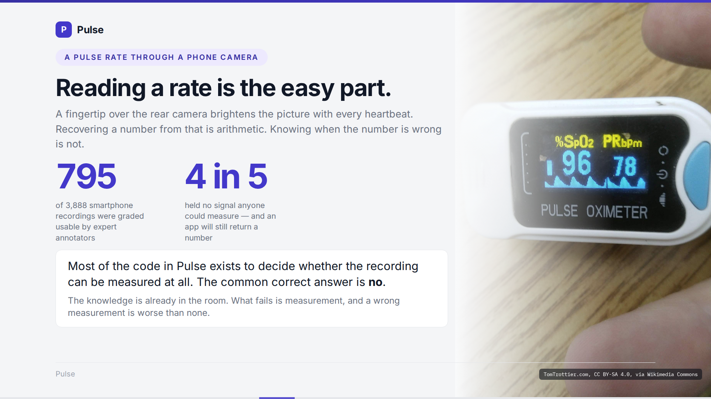
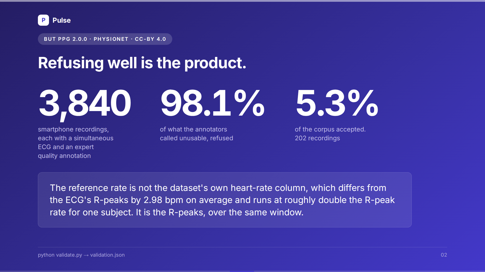
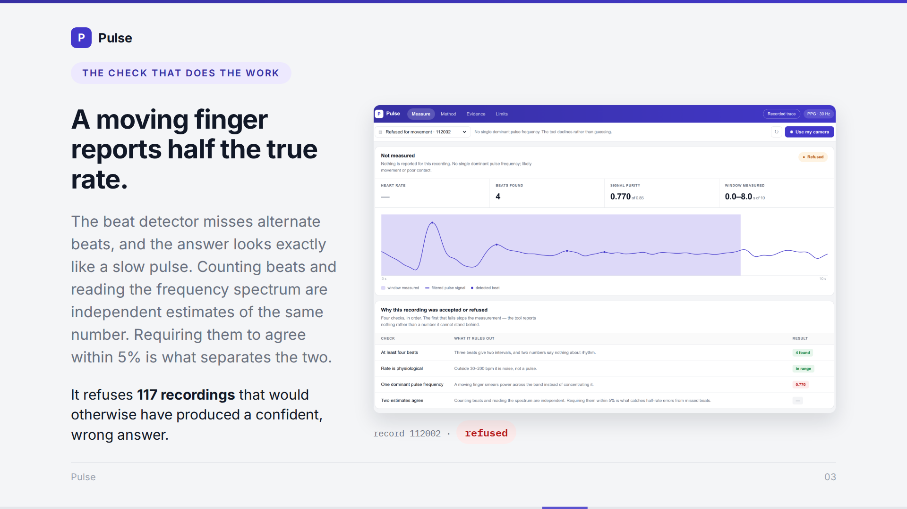
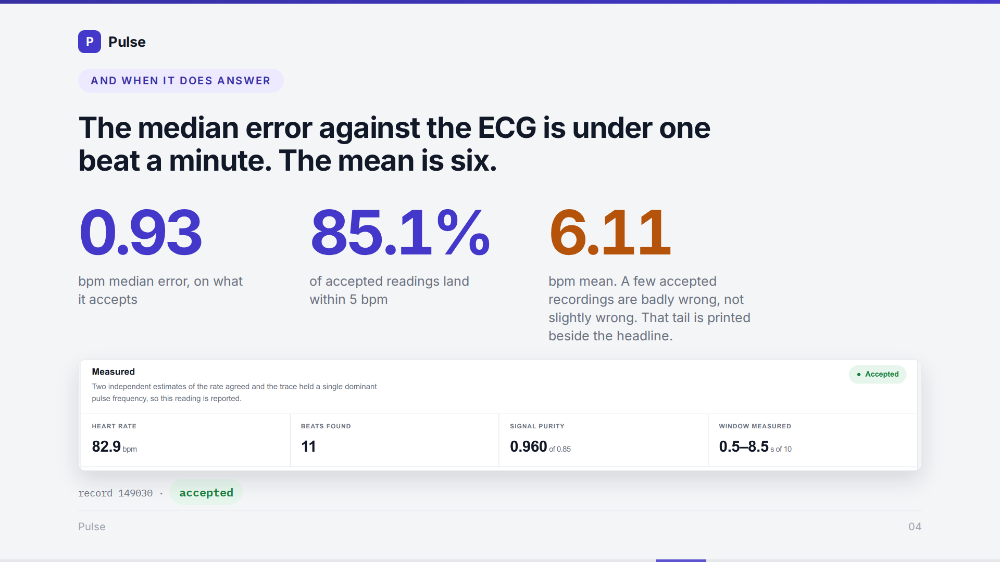
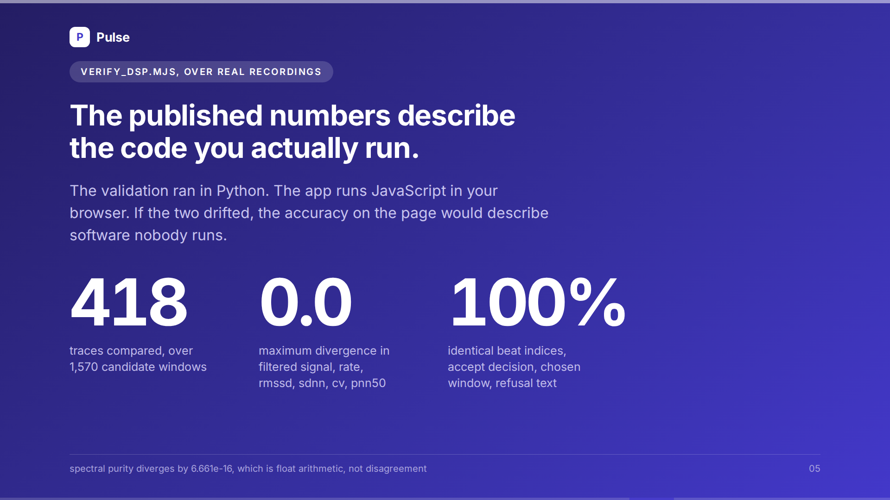
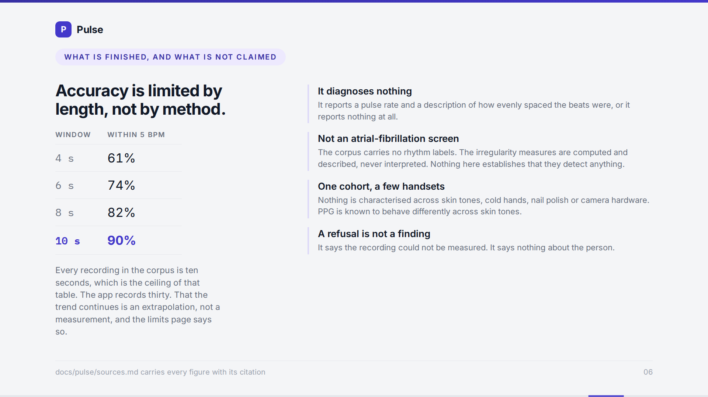

|
SLIDE 1 — READING A RATE IS THE EASY PART
0:00 → 0:36
 |
A fingertip over a phone's rear camera brightens the picture with every heartbeat. Recovering a number from that is arithmetic. Knowing when the number is wrong is not. In a public dataset of three thousand eight hundred and eighty-eight smartphone recordings, expert annotators called seven hundred and ninety-five of them usable. Four in five held no signal anyone could measure, and an app will still hand you a number. So most of the code in Pulse exists to decide whether the recording can be measured at all, and the common correct answer is no. 94 words · 36s |
|
SLIDE 2 — REFUSING WELL IS THE PRODUCT
0:36 → 0:54
 |
Three thousand eight hundred and forty smartphone recordings, each with a simultaneous ECG and an expert quality annotation. Of the recordings the annotators called unusable, Pulse refuses ninety-eight point one per cent. It accepts two hundred and two in total. Five point three per cent of the corpus. 48 words · 19s |
|
SLIDE 3 — A MOVING FINGER REPORTS HALF THE TRUE RATE
0:54 → 1:20
 |
When a finger moves, the beat detector misses alternate beats, and the answer looks exactly like a slow pulse. Counting beats and reading the frequency spectrum are two independent estimates of the same number, so requiring them to agree within five per cent is what separates the two cases. That check alone refuses a hundred and seventeen recordings that would otherwise have produced a confident, wrong answer. 67 words · 26s |
|
SLIDE 4 — AND WHEN IT DOES ANSWER
1:20 → 1:46
 |
On what it accepts, the median error against the ECG is zero point nine three beats per minute, and eighty-five point one per cent land within five. The mean is six point one one. That gap is the honest weakness: a few accepted recordings are badly wrong rather than slightly wrong, and the tail is printed beside the headline instead of trimmed out of it. 65 words · 25s |
|
SLIDE 5 — THE NUMBERS DESCRIBE THE CODE YOU RUN
1:46 → 2:02
 |
The validation ran in Python. The app runs JavaScript in your browser. Over four hundred and eighteen real traces and one thousand five hundred and seventy candidate windows, the filtered signal, the heart rate and the accept decision diverge by exactly zero. 42 words · 16s |
|
SLIDE 6 — WHAT IS NOT CLAIMED
2:02 → 2:30
 |
Pulse diagnoses nothing. It is not an atrial-fibrillation screen: the corpus carries no rhythm labels, so the irregularity measures are computed and described, never interpreted. Every recording validated was ten seconds long, and that the trend continues past ten seconds is an extrapolation, not a measurement. Nothing here is characterised across skin tones or camera hardware. And a refusal says the recording could not be measured. It says nothing about the person. 72 words · 28s |
| RECORDING NOTES 2:30 → 2:30 | Every figure above is in docs/pulse/sources.md with its citation. Drop in this order if a take runs long: 1. The second sentence of SLIDE 1. 2. The word count on SLIDE 5, down to the last sentence. Do not cut SLIDE 3, the mean-against-median line on SLIDE 4, or SLIDE 6. 0 words · 0s |